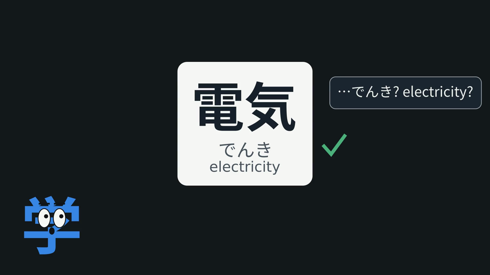
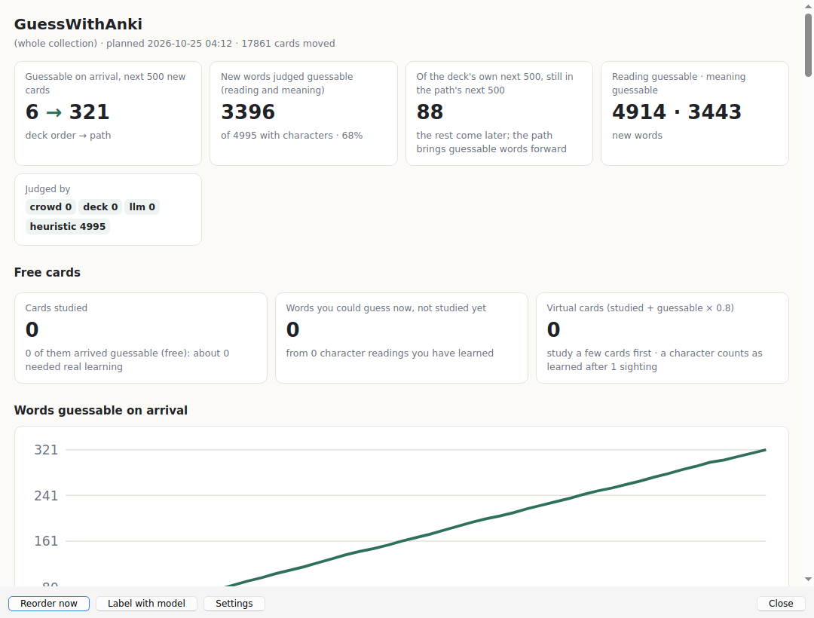
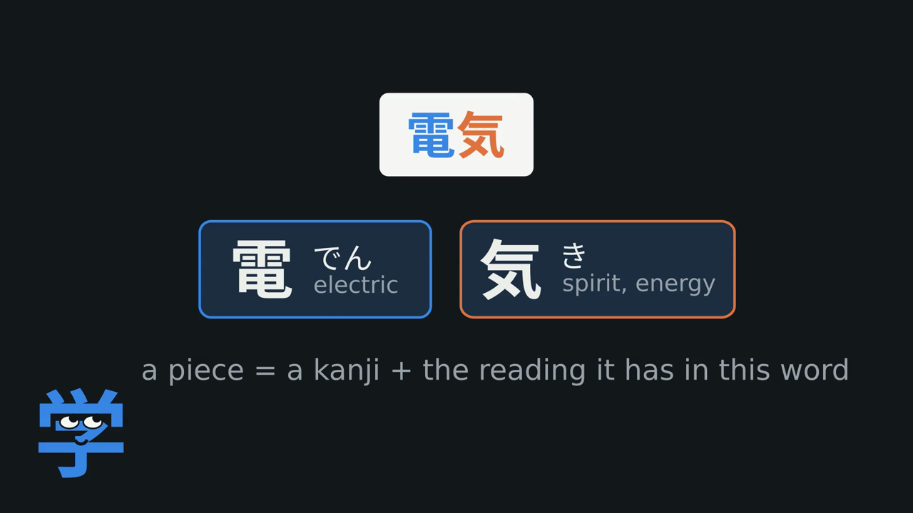
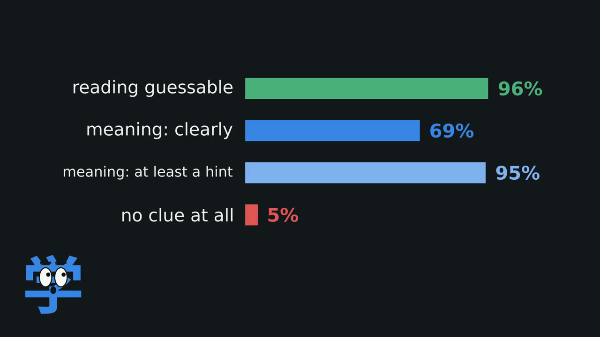
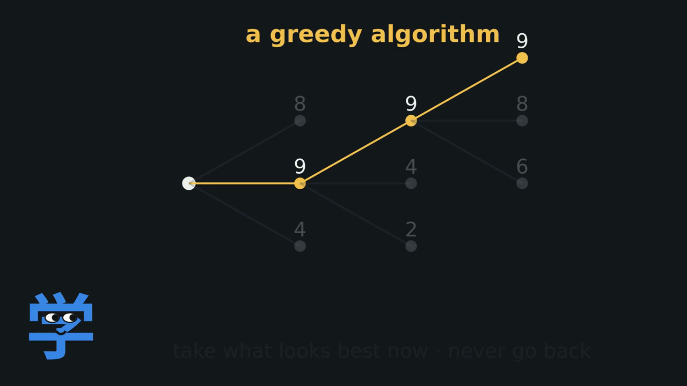
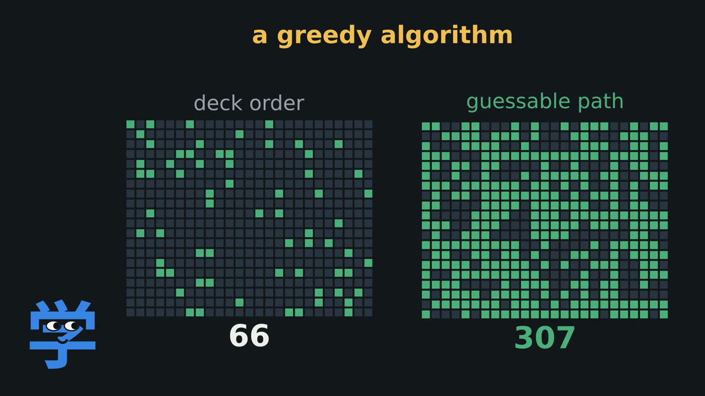
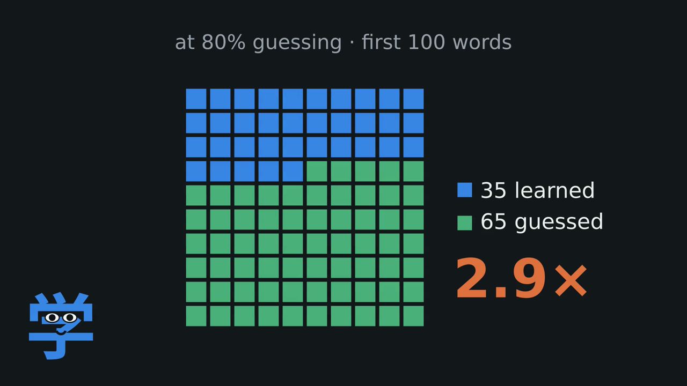
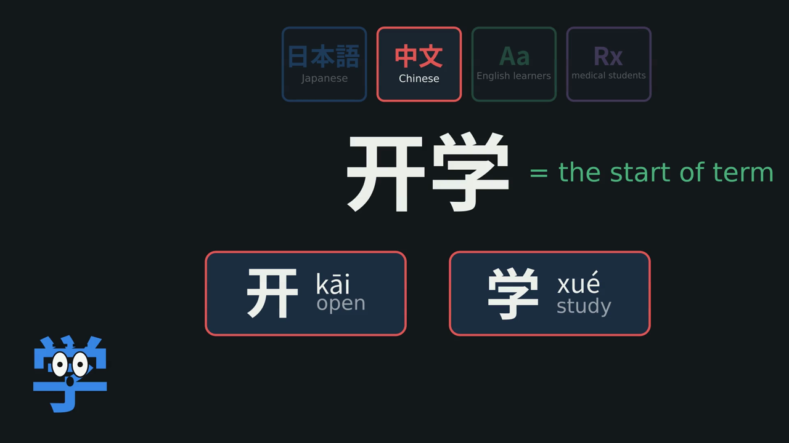
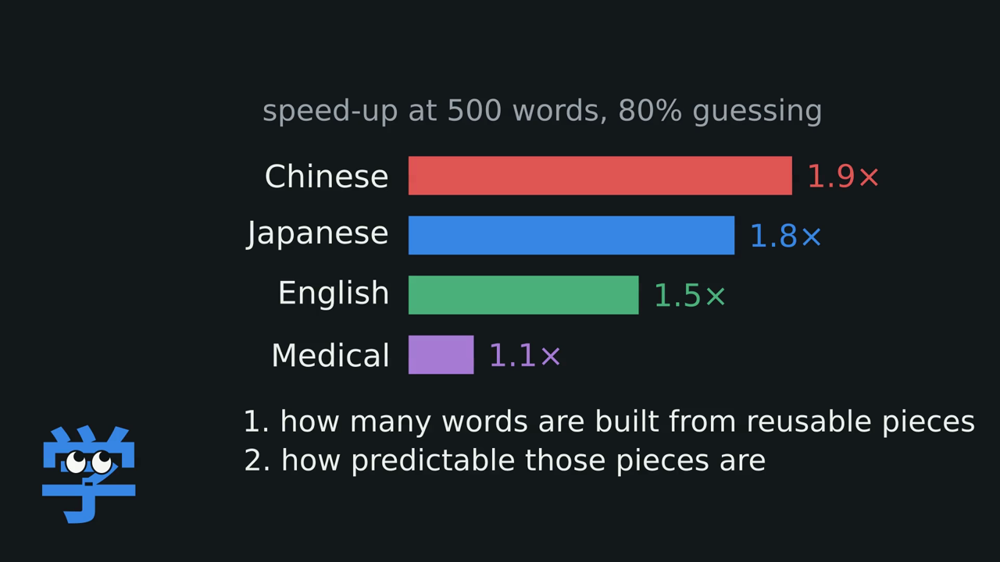
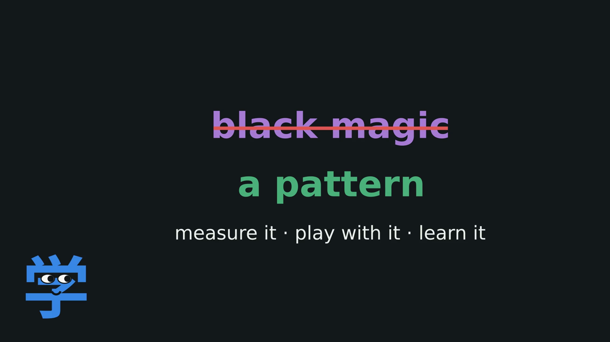

GuessWithAnki: Using computer science and Anki to learn more vocabulary with less memorization
I've seen this happen countless times. Someone who's really good at Japanese, usually around N2 or N1, flips through flashcards containing words they swear they've never seen before. Somehow, they already know them. The reading, the meaning, everything.
As a beginner, I thought it was black magic. Japanese text might as well have been hieroglyphics.
But after spending enough time with my own vocabulary cards, I started catching myself doing the same thing. I'd see a word I'd never encountered, take a guess at its meaning, flip the card, and find out I was exactly right.
The first few times, it blew my mind. And it got me wondering. How often can you actually do this? Is it just luck, or is there a pattern you can rely on?
I decided to find out with a little computer science and some Python. Then I turned what I learned into an Anki add-on that does the lazy work for you. It arranges your cards so that as many words as possible are already guessable when you first see them.

What I Built
GuessWithAnki is an Anki add-on that reorders your new cards so that more words become guessable by the time you encounter them.
The idea is simple. If you've already learned the pieces that make up a word, you might be able to figure out its meaning, and sometimes its reading, without ever having studied the word itself.
Instead of memorizing every word from scratch, you start recognizing patterns and guessing new words correctly on the first try.
That's what I call a free card, a word you get right without having to learn it the hard way.
This project builds on GuessWithKanji, my original Japanese-only add-on. This time, I wanted to see how far the idea could go beyond Japanese.
It now supports four types of decks.
| Profile | What counts as a piece | When a word is guessable |
|---|---|---|
| Japanese | A kanji paired with its reading in that word (電 read as でん) | Both the meaning and reading follow from its pieces |
| Chinese | A character paired with its pinyin syllable and tone (开 read as kāi) | Both the meaning and pinyin follow |
| English | A prefix, root, or suffix (un-, employ, -ed) | The meaning follows from its parts |
| Medical | A Greek or Latin root or affix (hepat, -itis) | The meaning follows from its parts |
Why it rewards laziness
The goal is to do less memorizing.
GuessWithAnki finds the words you're likely to figure out for yourself, then puts them shortly after the cards that teach you their pieces.
That way, instead of learning every word the hard way, you can let what you already know do some of the work.
Demo
The video at the top walks through the whole idea in about nine minutes, including results for all four profiles.
Here's what the add-on looks like running on a Chinese vocabulary deck in Anki.

Of the next 500 new cards, only 6 are guessable in the deck's original order. With GuessWithAnki, that number jumps to 321.
Same cards. Different order.
Code
- BlaiseLabs/GuessWithAnki has the add-on, measurement tools, experimental results, and video source files, including Manim scenes, narration, and build scripts.
- BlaiseLabs/GuessWithKanji is the original Japanese-only version.
How I Built It
1. How guessable is a word?
I started by looking at how much vocabulary words overlap in the kanji they use.
If every Japanese word were made up of completely different kanji, guessing would be impossible. Every word would introduce something new.
But that's not how languages work. The same characters appear again and again, in different combinations.
The more these pieces overlap, the more opportunities you have to recognize a new word without learning it from scratch.

The reading
This part was surprisingly straightforward.
Two free dictionaries, KANJIDIC2 and JMdict, provide kanji readings and tens of thousands of vocabulary entries.
I wrote a small Python function to match each word's reading to its individual kanji. Compared against JmdictFurigana, it agreed on 99% of 17,854 common words.
Once you have those matches, you can count how frequently each reading occurs.
For example, 気 is read as き in 130 dictionary words, but as け in only 14.
So if you've learned 気 as き, a new word using that same reading becomes much easier to guess.
The meaning
Figuring out whether a word's meaning follows from its pieces is trickier.
I tried two approaches, both using open models.
- Embeddings. EmbeddingGemma represents each meaning as a point in a vector space. If a word's meaning is close to the meanings of its kanji, there's a good chance you can infer it. After tuning on labelled words, this approach achieved an AUC of 0.83, compared with 0.73 for simple word overlap.
- Asking a model directly. Gemma 4 runs locally through Ollama and labels words in batches. It judges whether the reading and meaning are predictable, partly predictable, or not predictable, using a JSON schema that specifies the exact words in each batch.
My own deck
I ran the analysis on my own deck of 2,038 words containing kanji.
Here's what I found.

For 67% of the words, both the reading and meaning were predictable.
In other words, roughly two out of every three words I was about to study were, at least in theory, words I could have guessed on first sight.
That was a much bigger share than I'd expected.
2. Finding the right order with a greedy algorithm
There's a catch, though.
You can only guess a word if you've already encountered the pieces it's made of.
For example, you can't guess 電気 from its kanji if you've never learned 電.
So the problem becomes this. How do you arrange your cards to maximize the number of words you can guess, while minimizing the number you have to learn from scratch?
Trying every possible order is out of the question. For 2,000 cards, the number of possible arrangements has 5,736 digits.
Instead, I used one of the simplest ideas in computer science, a greedy algorithm.
A greedy algorithm builds a solution one step at a time. At each step, it chooses whatever looks most promising right now, without going back to reconsider earlier decisions.
It doesn't guarantee the perfect solution, but it's fast, and often gets surprisingly close.

At every step, the algorithm asks which card should come next.
- If a word is already guessable, it gets priority, especially if you've just encountered the pieces that make it up.
- If nothing is guessable yet, the algorithm looks for an opener, a card that introduces just one new piece, preferably one that will help unlock other words.
For example, you might study 取る (toru, to take), followed by 戻る (modoru, to return).
Once you've learned those pieces, 取り戻す (torimodosu, to take back) becomes guessable.
The algorithm tries to create as many of these little chains as possible.
On my own deck, this changed the number of guessable words among the next 500 cards from 66 to 307.

That's nearly five times as many words you might be able to figure out without first memorizing them.
3. Does it actually help?
Of course, a word being theoretically guessable doesn't mean you'll actually guess it correctly.
And even if you do, will it help you remember more over time?
To explore that, I built a simulation of someone studying with Anki for 100 days.
The simulated learner studies 20 new cards per day and completes every scheduled review. Reviews follow FSRS-6, Anki's scheduling algorithm, which I reimplemented and checked against py-fsrs.
Each piece of a word has its own memory state. That memory gradually fades, but gets reinforced whenever another word containing the same piece appears.
A word can only be guessed if the learner still remembers its pieces.
The best-case result was pretty wild.
On a JLPT vocabulary deck, with perfect guessing, a learner would need to learn just 16 cards from scratch to know their first 100 words. The other 84 could be guessed.
Of course, nobody guesses perfectly.
I checked my own Anki review history and found that when a word was guessable and I'd seen its kanji recently, I answered correctly about 73% of the time.
So I also tested a more realistic 80% guessing rate.
At that rate, reaching the first 100 words required learning just 35 cards from scratch, rather than 100.

And there was another benefit I hadn't expected. Less forgetting.
Every new word reinforces pieces you've already learned. So you're not just accumulating vocabulary. You're repeatedly practicing the patterns behind it.
In the Core 2k simulation, forgotten reviews by day 30 fell from 189 to 72.
The same ordering that made words easier to guess also helped keep their building blocks fresh in memory.
4. Does it work beyond Japanese?
Japanese turned out to be a great fit for this idea. But I wanted to know whether it would work for other subjects too.
I went through roughly 1,600 Reddit threads using Reddit's API to find the decks learners actually recommend to beginners.
Then I ran the same experiment on two decks each for Chinese learners, English learners, and medical students.
The underlying algorithm stays the same. The only thing that changes is what counts as a reusable piece.
For speed, I used a cloud model to label the 16,331 words across these decks in parallel, processing about 2.1 million tokens. The add-on itself uses Gemma locally, processing one batch at a time.

Here are the results at an 80% guessing rate.
| Deck | Guessable | Cards to reach 500 words | Speed-up |
|---|---|---|---|
| New HSK 3.0, levels 1–4 (Chinese) | 71% | 392 → 200 | 2.0× |
| HSK 2012, levels 1–5 (Chinese) | 66% | 473 → 256 | 1.8× |
| Core 2k (Japanese) | 60% | 481 → 265 | 1.8× |
| Kaishi 1.5k (Japanese) | 64% | 474 → 282 | 1.7× |
| Oxford 3000 (English) | 27% | 494 → 303 | 1.6× |
| 4000 Essential English Words | 20% | 494 → 356 | 1.4× |
| Medical Terminology with Etymology | 27% | 482 → 474 | 1.0× |

Chinese did even better than Japanese
Chinese turned out to be an even better fit than I'd expected.
A character usually has one reading, so the pinyin of about 96% of words can be predicted from their characters.
And 90% of HSK words share every character with at least one other word.
That gives the algorithm plenty of reusable pieces to work with.
The advantage also lasts. Even beyond a thousand words, the optimized order maintains a 1.6–1.8× lead.
English is more modest
English is a different story.
Most everyday English words don't break neatly into meaningful pieces. Knowing the spelling of beach, for example, doesn't tell you what it means.
But word families offer a useful shortcut.
Once you know employ, words like employer, employment, and unemployed become much easier to figure out.
The gains aren't as dramatic as in Chinese or Japanese, but they're still meaningful.
Medicine was the surprise
I initially thought medical terminology would be the perfect use case.
So many medical terms are built from Greek and Latin roots. Surely those would be easy to recombine?
But the medical terminology deck barely improved on its own.
The problem was the deck itself. It was relatively small and mixed together technical terms, abbreviations, drug names, and everyday vocabulary. Many roots simply didn't appear often enough to be reused.
Medical students are often advised to learn the roots first. But with a roots deck placed ahead of the terminology deck, the learner has to get through 982 root cards before seeing the first medical term, around day 50.
GuessWithAnki takes a different approach.
Instead of teaching every root up front, it introduces only the roots needed for the next terms, right before those terms appear.
That means the learner can start guessing actual medical terminology within the first two weeks.
So even when the raw speed-up looks small, changing the order can make the learning experience very different.
Across all four profiles, the pattern became clear. What matters is how often meaningful pieces get reused, and how reliably they predict the words built from them.
The Lazy Payoff
With an 80% guessing rate, the simulation suggests you could reach your first 500 Chinese words while learning only about half as many cards from scratch. Japanese comes close.
You get more words from less memorization, reinforce the pieces you already know, and spend more of your time recognizing patterns instead of treating every word as something completely new.
And that's what brings me back to those advanced Japanese learners who seemed to know words they'd never studied.
What looked like black magic to me as a beginner wasn't magic at all.
They'd learned enough pieces to start seeing the patterns.
GuessWithAnki is my attempt to help the rest of us get there sooner.
